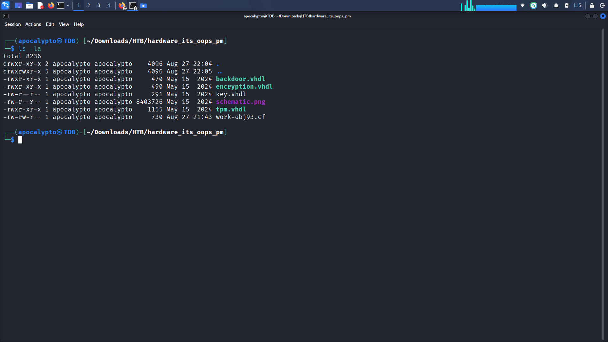
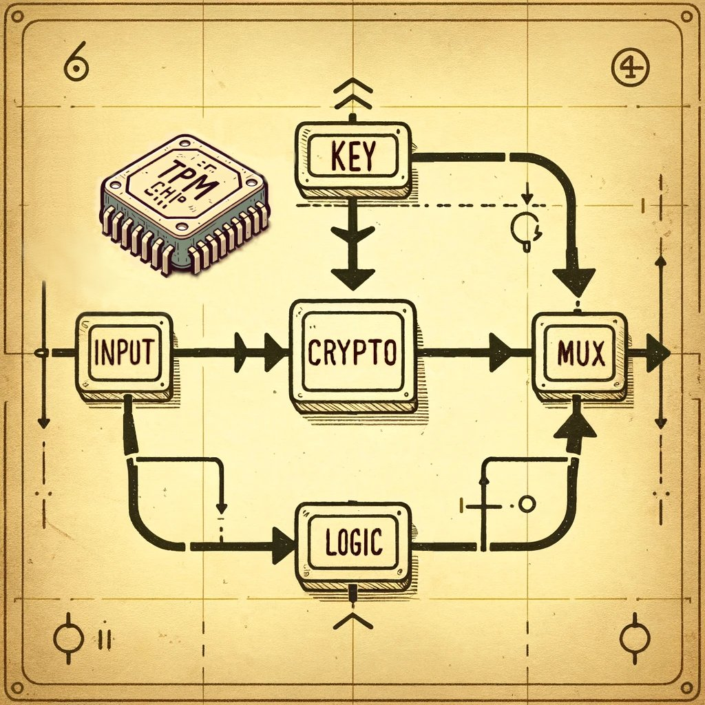
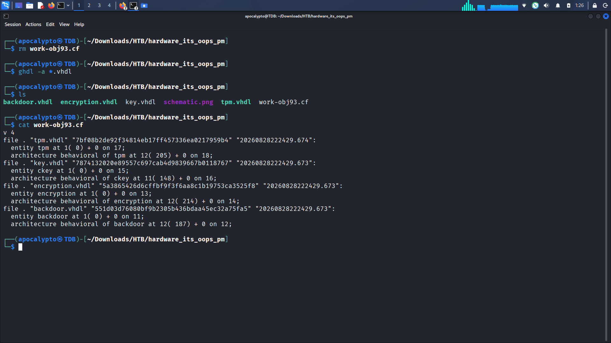
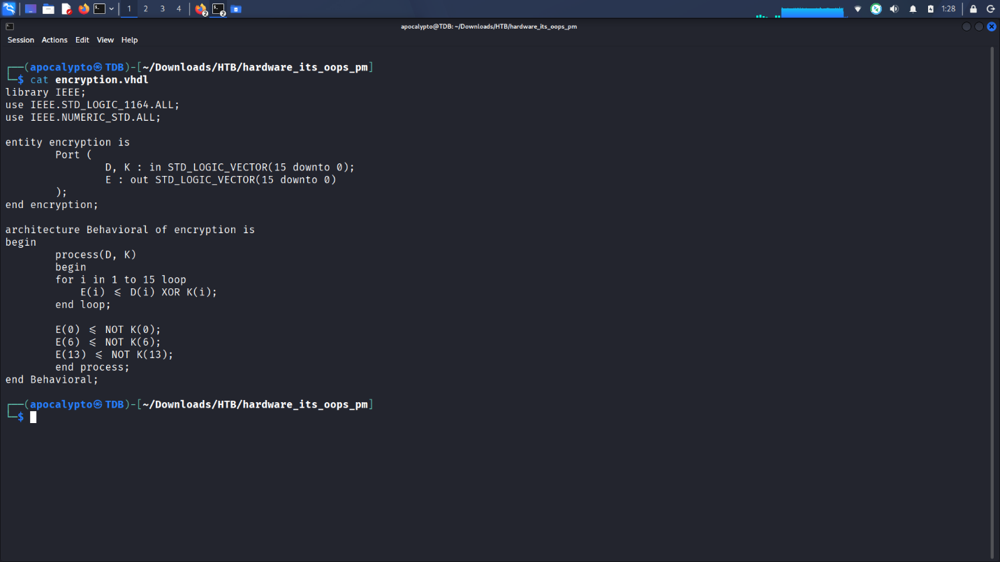
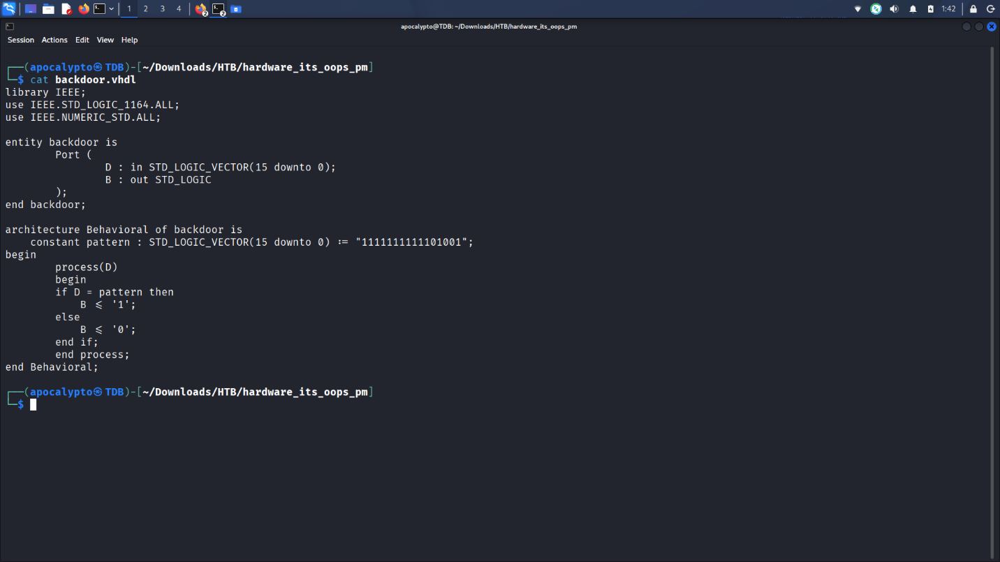
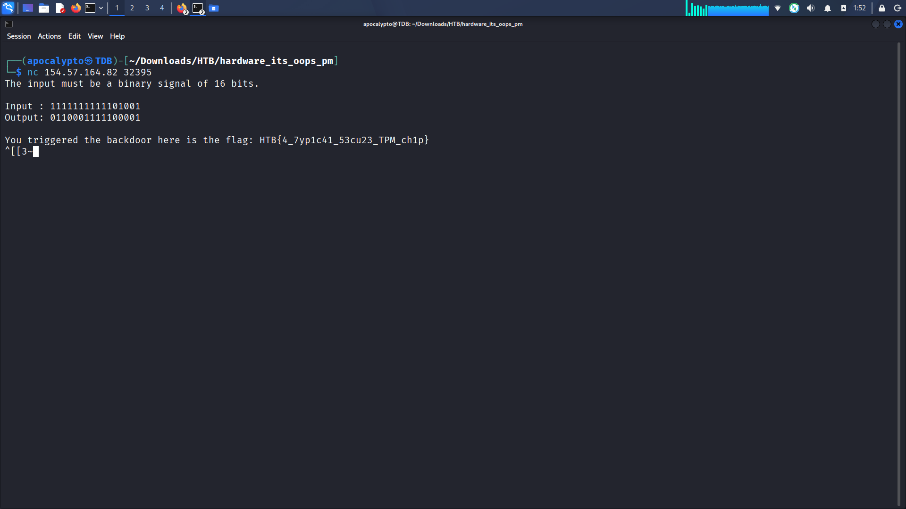

Overview
The challenge provides a handful of files for a small hardware design: a schematic
image and four .vhdl source files. VHDL (VHSIC Hardware Description
Language) is a text-based hardware description language used to define the behavior
of digital circuits — it isn't an executable in the traditional sense, but source
that gets synthesized into actual logic on an FPGA or ASIC. Here, it's provided as
pre-written source so we can read the design directly rather than reverse-engineer a
binary.

Step 1 — Reading the schematic
schematic.png lays out the high-level data flow for the module. It
depicts a TPM (Trusted Platform Module) chip — a hardware
component used to securely store keys and perform cryptographic operations so
that sensitive data can't be recovered through physical tampering with the rest
of the board.
The diagram shows input data flowing into a Logic block, then into a Crypto block alongside a Key, before both paths converge on a MUX (multiplexer) that produces the final output. The multiplexer is the key detail: it means there are at least two possible paths to the output, and something decides which one is taken — that "something" is what we need to find in the VHDL source.

Step 2 — Analyzing the sources with GHDL
GHDL is
an open-source VHDL simulator. Running ghdl -a *.vhdl
analyzes the source files — it parses and type-checks each
entity/architecture pair and compiles them into GHDL's internal work library
(the work-obj93.cf file), which is what makes later simulation or
elaboration possible.
✓ corrected
.vhdl files directly. It's included here because it's a useful sanity
check that the files are syntactically valid VHDL and confirms how the entities
relate to each other (as shown in the work-library listing below).

ghdl -a *.vhdl compiles the sources into GHDL's work library, confirming four entities: tpm, ckey, encryption, and backdoor.Step 3 — Reading encryption.vhdl
encryption.vhdl defines an entity called encryption
with two 16-bit inputs, D (data) and K (key), and one
16-bit output, E.
-- simplified from encryption.vhdl
entity encryption is
Port ( D, K : in STD_LOGIC_VECTOR(15 downto 0);
E : out STD_LOGIC_VECTOR(15 downto 0) );
end encryption;
-- for i in 1 to 15: E(i) <= D(i) XOR K(i)
-- then overridden:
-- E(0) <= NOT K(0)
-- E(6) <= NOT K(6)
-- E(13) <= NOT K(13)
The core operation loops from bit 1 to bit 15 and XORs each bit of D
with the corresponding bit of K. After the loop, three specific bits
— 0, 6, and 13 — are overridden and set to the inverse of the
corresponding key bit, regardless of what the XOR would have produced. This is
the "Crypto" block from the schematic.

encryption.vhdl — bitwise XOR of D and K, with bits 0, 6, and 13 forced to NOT K.Step 4 — Finding the backdoor
backdoor.vhdl is much simpler: one 16-bit input D, and
a single-bit output B. It defines a hardcoded constant:
constant pattern : STD_LOGIC_VECTOR(15 downto 0) := "1111111111101001";
if D = pattern then
B <= '1';
else
B <= '0';
end if;
If the 16-bit input matches pattern exactly, B is
driven high — this is the multiplexer's "select" signal from the schematic. In
other words: if you send exactly this bit pattern, the MUX routes the
input straight to the output, completely bypassing the encryption block.
That's the backdoor — a hardcoded master key baked directly into the hardware
logic, which is exactly the kind of supply-chain risk a TPM is supposed to
protect against.
Converting the 16-bit binary pattern 1111111111101001 to hex gives
0xFFE9.

backdoor.vhdl — the hardcoded 16-bit trigger pattern 1111111111101001 (0xFFE9).Step 5 — Triggering it on the live target
With the pattern in hand, connecting to the challenge's exposed service over
netcat and submitting the same 16-bit binary string as input
triggers the backdoor condition and returns the flag.

1111111111101001 to the service over netcat triggers the backdoor and returns the flag.Flag
Takeaways
- A TPM stands for Trusted Platform Module — a dedicated chip for secure key storage and crypto operations, distinct from the general CPU/PCB logic around it.
- Hardcoded bypass conditions ("golden patterns," debug backdoors, factory-test hooks) are a realistic class of hardware vulnerability — they're easy to leave in during development and easy to miss in review since they don't show up as a typical software bug.
- Reading VHDL directly is often faster than trying to simulate it — for small designs like this, the "vulnerability" is legible straight from the source.